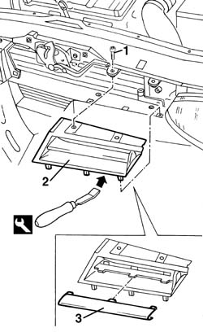

7055A41 RIGHT FRONT GRILLE - R.R.
- Path
- Procedures > 70 FITTINGS > 7055 MOULDING AND PROTECTION > 7055A exterior mouldings > 7055A41 RIGHT FRONT GRILLE - R.R.
- Kind
- repair procedure (removal / refitting; the operation number is the code)
- Applies to
- all engines; all production periods
- Interactive page
- https://sloeber94.github.io/elrnDB-a156/en/#/3238951
Applies to: all engines; all production periods
 Removing
Removing
 Refitting
Refitting7055A43 central front grille - r r
1. Unscrew the fixing screws.
2. Remove the grille from the check rods with the proper tool.
 | Name | Country |
|---|---|---|
2 | Scraper blade | 1.823.014.000 |
3. If necessary, remove the chromium-plated collar badge from the grille and remove it from the check rods.

Applies to: all engines; all production periods
Refitting
RemovingMake sure that the grille and the chromium-plated collar badge are not damaged.
If removed, install the chromium-plated collar badge on the grille.
Install the grille again by placing it on the check rods and fix it with the screws.
Topics linked from this page (1)
Topics that link to this page (51)
- 1004B10 power unit with manual gearbox - r + r
- 1016D21 lh cylinder head - r r and replace gasket for versions with air conditioner
- 1020D10 front crank shaft oil seal cover - r + r and replace seals with timing belt removed
- 1020D36 flywheel end oil seal - replace for manual gearbox with hydraulic selection versions
- 1020D38 flywheel side oil seal - replace
- 1024B10 engine flywheel - r + r for versions with manual gearbox
- 1024B11 engine flywheel - r r for manual gearbox with hydraulic selection versions
- 1024B20 engine flywheel - r + r for versions with automatic transmission
- 1048A21 filter input sleeve - r r
- 1048A23 cold air intake - r r
- 1048A57 lower resonator device - r r
- 1048B22 air delivery sleeve from heat exchanger to intake manifold - r + r
- 1048B48 heat exchanger duct - r r
- 1048B50 turbo charger intercooler - r + r
- 1084C34 engine oil cooling radiator - r + r
- 1084C36 Engine oil cooling RADIATOR mounting BRACKET - R.R.
- 1084C40 Air DUCT for engine oil cooling radiator - R.R .
- 1088B20 engine cooling radiator - r + r
- 1088B24 engine cooling radiator - r r for air conditioned versions
- 1088B32 engine cooling radiator support beam - r r
- 1088E11 fans with single engine duct - r+r
- 1810A20 clutch - r + r
- 1810A28 clutch - r r for manual gearbox with hydraulic selection versions
- 1820A24 thrust bearing linkage - r + r
- 2110A10 manual gearbox and differential - r + r
- 2110A11 manual gearbox with differential - r r for versions with hydraulic selection
- 2110C24 seals for gearbox input shaft - r r for manual gearbox with hydraulic selection versions
- 2130A10 automatic transmission - r + r
- 2130B12 automatic transmission torque converter - r+r
- 4130B49 return pipe from power steering case to heat exchanger pipe r r
- 4130B52 heat exchanger pipe - r+r
- 4130B54 return pipe from heat exchanger pipe to power steering fluid resevior r r
- 5040A40 air conditioner condenser - r+r
- 5040A44 air conditioner dehydrating filter/accumulator - r+r
- 5040A50 pipe from compressor to air conditioner condenser - r+r
- 5040A60 pipe from condenser to evaporator (expansion pipe) - r+r
- 5040A73 compressor inlet pipe - r r
- 5040B14 air conditioner system multi-level pressure switch - r+r
- 5505A26 bonnet wiring - r r
- 5540B16 FRONT LIGHT CLUSTER with direction indicator (one), left or right - R.R.
- 5540B70 Left front LIGHT CLUSTER with direction indicator - R.R.
- 5540B71 Right front LIGHT CLUSTER with direction indicator - R.R.
- 5540B83 Igniter IGNITION REACTOR for one gas discharge LIGHT CLUSTER left or right RR
- 5540D80 fog lamp wiring bundle - r r or replace
- 5550B30 l/h or r/h horn (one) - r+r
- 7025A26 bonnet lid opening control - repair
- 7025A27 bonnet lid opening linkage - r r for right-hand drive versions
- 7055A40 radiator shield - r r
- 7055B08 (One) GRILLE on front bumper - R.R.
- 7205E10 Stripping FRONT BUMPER
- 7210E10 R.R. FRONT BUMPER